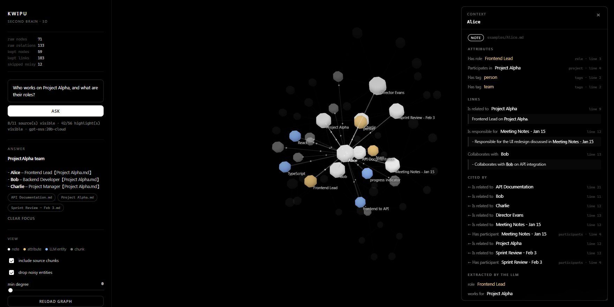
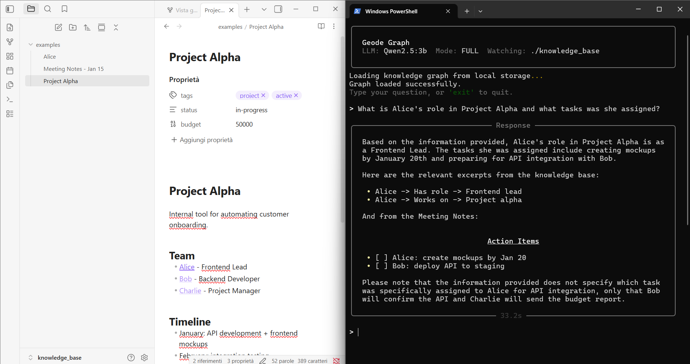
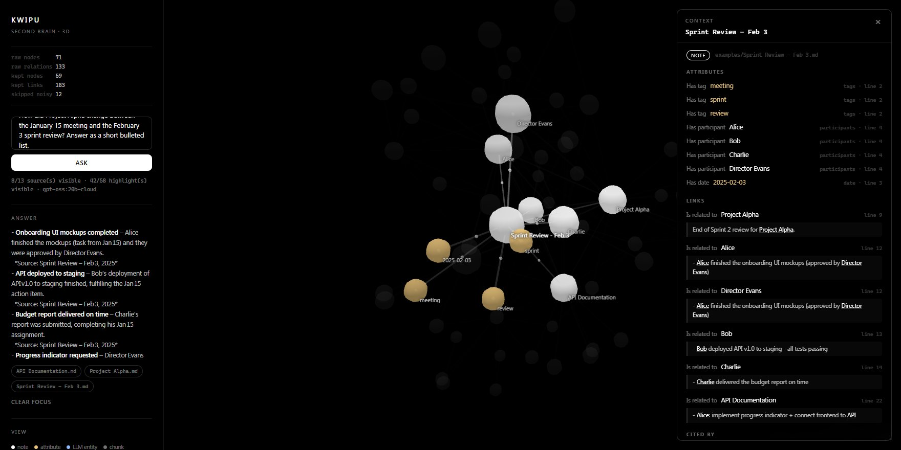
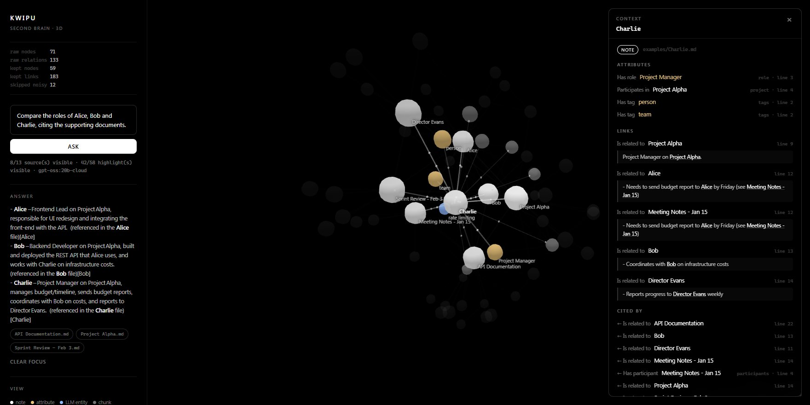

Every relation knows where it came from.
Kwipu reads the frontmatter and the [[wikilinks]] you already write, and asks an LLM for the relations hidden in the text. Hover a relation to see the exact line it comes from.
Notes, not strings
[[Bob]], [[Bob#Role]], [[People/Bob]] and a renamed note's aliases: all resolve to the same node. Homonyms in different folders stay apart.
Provenance on every edge
Structural relations keep the file, the frontmatter field, the line and a hash of the note, so an answer can always be traced back.
Six languages
Relation patterns for English, Italian, French, German, Spanish and Portuguese, chosen by the language of each line.
One knowledge graph, wherever you work.
The same index answers from a 3D web interface, a terminal next to your editor, or any AI client that speaks MCP.

Ask a question, watch the cited nodes light up, then click any node for a context card: its attributes, links, backlinks and the line of the note each one comes from.

Keep your notes open in Obsidian and ask from the terminal. Kwipu watches the folder and updates the graph when notes change.
{
"mcpServers": {
"kwipu": {
"command": "C:/path/to/Kwipu/.venv/Scripts/python.exe",
"args": ["C:/path/to/Kwipu/kwipu_mcp_server.py"],
"env": {
"KWIPU_KNOWLEDGE_DIR": "C:/path/to/vault",
"KWIPU_LLM_MODEL": "qwen2.5:7b",
"KWIPU_EMBED_MODEL": "nomic-embed-text"
}
}
}
}
Give any MCP client two tools: query_graph for an answer, and query_graph_detailed for the answer plus deduplicated citations.
Built to give answers you can check.
Grounded, cited answers
Answers are built from source chunks and return their citations, so every claim can be opened and verified.
Structure plus semantics
Wikilinks and frontmatter give a precise skeleton; an LLM adds the relations written in plain prose.
Hybrid retrieval
Vector similarity, BM25, temporal metadata and optional synonym expansion work together to find the right context.
Your formats
Markdown, plain text, PDF and Word documents, from an ordinary folder or an Obsidian vault. Your files are never rewritten.
Live, safe updates
A watcher picks up new and changed notes; storage generations are published atomically, so readers never see a half-written graph.
Local when you choose
Pick a local Ollama model and the whole pipeline, from indexing to answers, stays on your machine.
Questions your notes can finally answer.


You decide where your notes go.
Kwipu talks to an Ollama endpoint. A local endpoint alone does not guarantee local inference: the model you choose does. Pick it before you index.
Local Ollama model
Indexing, retrieval and answers stay on your machine when both the LLM and the embedding model run locally.
ollama pull qwen2.5:7b
gpt-oss:20b-cloud
Stronger extraction with no local GPU. Document chunks, retrieved context and questions are sent to the model provider; review its policies first.
ollama pull gpt-oss:20b-cloud
From clone to first answer in minutes.
You need Python 3.12+, Ollama and, for the web interface, Node.js. The repository ships with a small example vault to try right away.
Install
git clone https://github.com/benmaster82/Kwipu.git cd Kwipu py -3.12 -m venv .venv .\.venv\Scripts\Activate.ps1 python -m pip install -r .\bridge\requirements.txt
Choose the models
ollama pull nomic-embed-text
ollama pull qwen2.5:7b # local, or gpt-oss:20b-cloud
$env:KWIPU_LLM_MODEL = "qwen2.5:7b"
Build the graph and ask
The first run indexes knowledge_base/, then waits for your questions and keeps watching the folder.
python .\geode_graph.py --fast
> Who works on Project Alpha, and what are their roles?
Open the 3D interface (optional)
In two more terminals with the same configuration:
python -m bridge
npm --prefix .\frontend ci
npm --prefix .\frontend run dev # http://localhost:5173
Commands shown for Windows PowerShell. The README has the Linux and macOS equivalents and the full configuration reference.